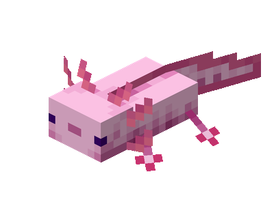

Axolotl

El Axolotl es la criatura más adorable de Minecraft, con su apariencia encantadora y su comportamiento tranquilo.
- Tipo:
- Pacífico
- Salud:
- 14 HP
- Daño:
- 2 puntos (dificultad fácil, normal y difícil)
- Experiencia:
- Mínimo 1, Máximo 3 XP
- ¿Se puede domar?:
- No
- ¿Se puede criar?:
- Sí, con cubo de peces tropicales
Botines
El Axolotl no deja botines al morir.
Dónde aparece
El Axolotl aparece en el Overworld, en el bioma de Cuevas Exuberantes (Lush Caves).
- Aparece en el agua, en el bioma de Cuevas Exuberantes, en oscuridad total sobre bloques de arcilla.
Comportamiento
Ataca a los ahogados, guardianes, guardianes ancianos, calamares y calamares brillantes. Finge su muerte al recibir daño para recuperar salud, y otorga Regeneración a los jugadores que le ayudan a combatir.
Debilidades
- El Axolotl es vulnerable si está fuera del agua, se asfixia en tierra (muere a los 5 minutos)
Curiosidades
- Tiene 5 variantes de color: rosa (lucy), marrón (wild), dorado, cian y azul (extremadamente raro, probabilidad de 1 entre 1200).
- El Axolotl aparece por primera vez en la versión 1.17